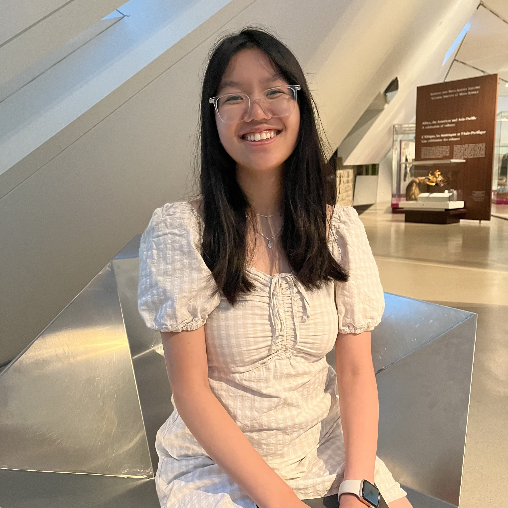

Jenny You

Summary
Hi! My name is Jenny You and I am a First Year Computer Science student at
the University of Rhode Island majoring in Computer Science with a planned minor
in Cybersecurity. I am a hardworking student who aims to always do my best in what
I do. I enjoy coding and computer science as I have always had a passion for puzzles
and problem solving. I am currently looking for internship or research opportunities that
can help further increase my knowledge in the field.
Education
Work Experience
Hostess - Roast House Inc.
Jul. 2021 - Aug. 2022
- Answered phone calls and processed take-out orders in a timely and accurate manner.
- Communicated effectively with customers to ensure their orders were accurate and completed to their satisfaction.
- Managed the seating chart, ensuring that tables were filled efficiently and that guests were seated in their preferred
sections.
- Demonstrated ability to work well in a fast-paced, high-pressure environment.
- Demonstrated a high level of customer service and professionalism.
Technical Skills
- Languages: Java, HTML/CSS, Javascript, Python
- Developer Tools: VS Code, Eclipse, IDLE
- Technologies/Frameworks: JUnit
- Communication: English (native), Chinese (intermediate)
Awards and Certifications
- IGT Scholarship for Women in Computer Science - University of Rhode Island
Other